module 7
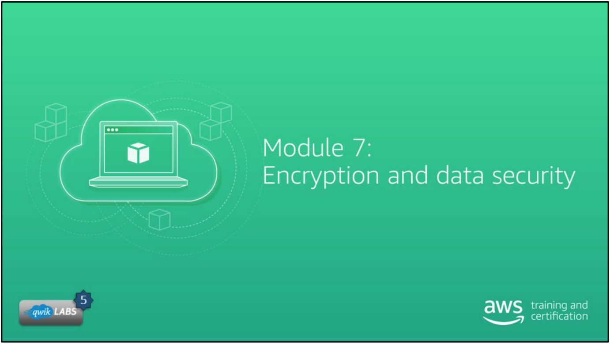
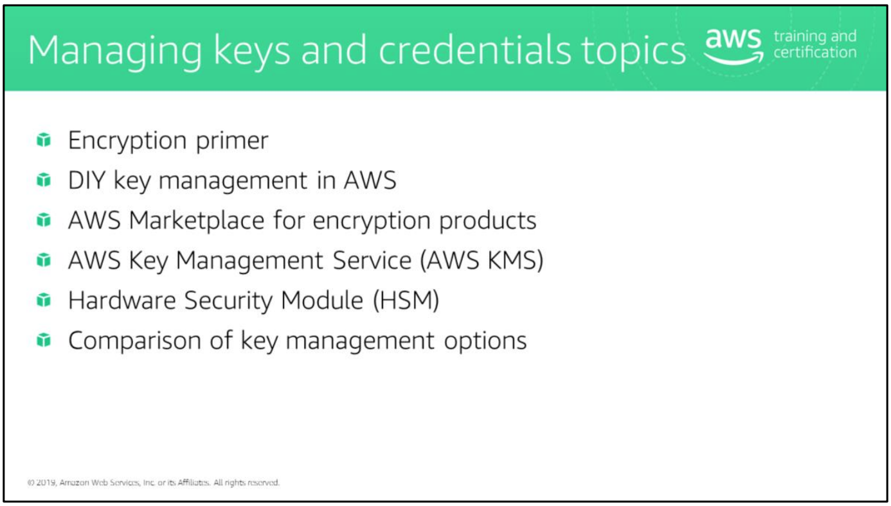
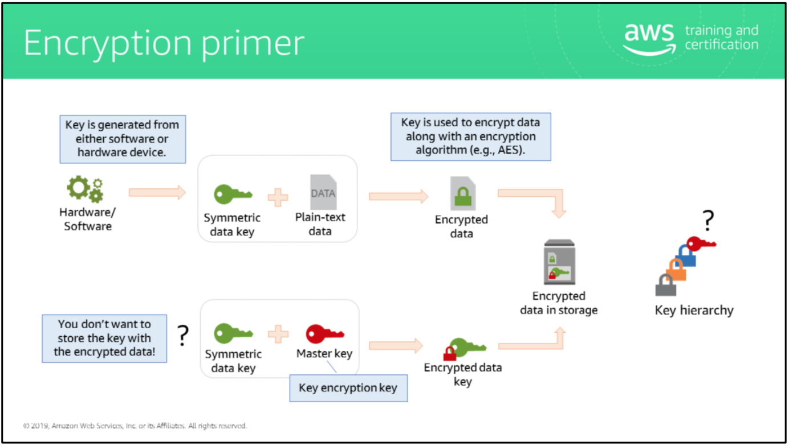
Data encryption and key management
A symmetric data key is generated from either a software or a hardware device. Symmetric keys are preferable to asymmetric keys when you want to quickly encrypt data of an arbitrary size. The key is used along with an encryption algorithm (like AES), and the resulting ciphertext is stored.
You cannot store the symmetric key you just used with the encrypted data, it has to be protected. The best practice is to encrypt the data key with another key, called a key-encrypting key. It can be symmetric or asymmetric, but it needs to be derived and stored separately from the system in which data is processed. After the data key has been encrypted with the key-encrypting key, store the resulting ciphertext with the encrypted data.
How is the key-encrypting key protected? It is possible to create a key hierarchy by to iterate enveloping the key with additional keys.
Eventually, plaintext key that is needed to start the the “unwrapping” process to derive the final data key and decrypt the data. The location and access controls around this key should be distinct from the ones used with the original data.
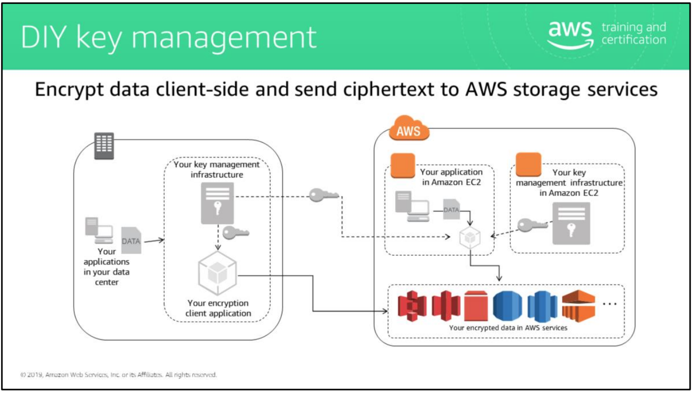
Let’s start with the case where all the encryption happens in your data center on the systems you control.
The code that performs the encryption has to get keys from somewhere; we’ll call that system your key management infrastructure.
Alternatively, the data and the code that performs the encryption may be in an Amazon EC2 instance. This code may call back to the key management infrastructure in a data center or to a solution running on another Amazon EC2 instance.
After the data is encrypted by you with your keys, it’s sent to the AWS service that will ultimately store it.
Note: Decryption of this data can only happen in your code, using keys under your control.
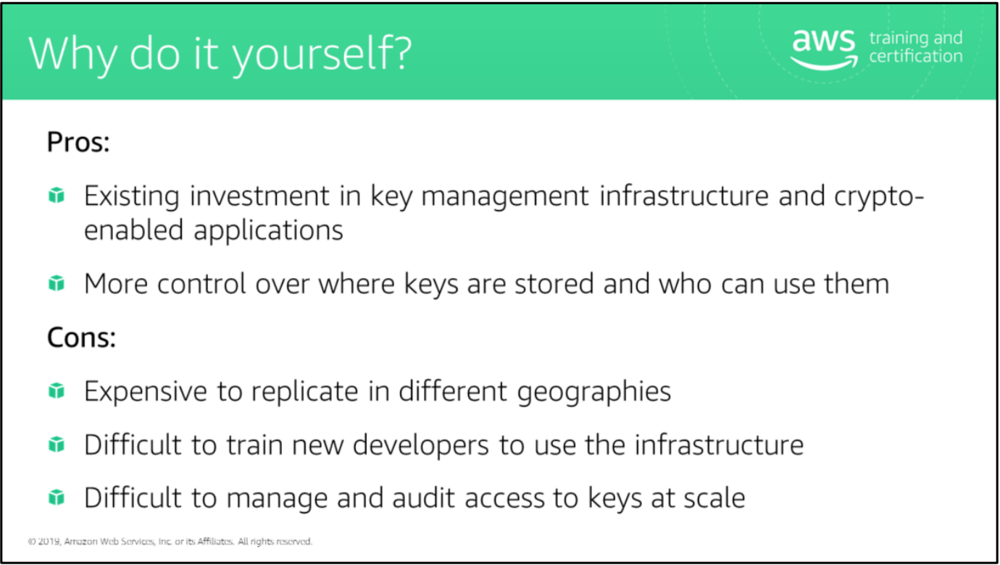
Typically, an organization that is comfortable with an existing, sophisticated encryption solution tends to choose the DIY route.
If they must comply with their existing policies and needs, but want to leverage the cloud at the same time, the reasonable approach is to go with DIY.
The challenge with DIY comes when you have to scale across regions. You must replicate the key management system everywhere. Also, whenever you have new staff, they must learn how to use the infrastructure.
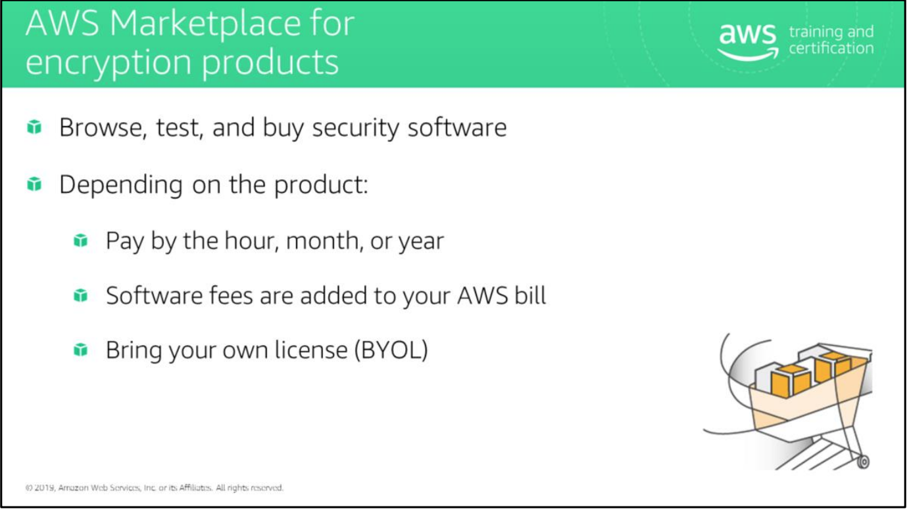
The advantage of purchasing a product from AWS Marketplace is that you can start using the pre-configured AMIs immediately.
Some partners provide bring-your-own-license capacity. If you already use encryption products in your on-premises environment and want to use the same solutions, you can extend the licenses into the cloud.
There are a lot of options in the AWS Marketplace for encryption products. Vendors you may have already engaged are providing their software on AWS, so you might find the same thing you are running in your data center.
In the marketplace, vendors can now upload an AMI with up to three CloudFormation templates. If their application requires EC2 in addition to other services, it can be provided by the vendor in the AWS Marketplace as part of your launch and reduce manual configuration.
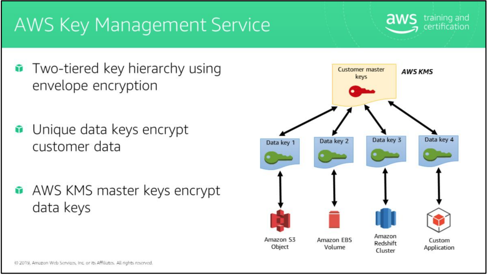
- If you are a developer who needs to encrypt data in applications, use the AWS SDKs with AWS KMS to access and protect encryption keys.
- If you’re an IT administrator looking for a scalable key management infrastructure to support developers and with a growing number of applications, use AWS KMS to reduce licensing costs and operational burdens.
- If you’re responsible for providing data security for regulatory or compliance purposes, use AWS KMS to verify if that data is encrypted consistently across the applications where it is used and stored.
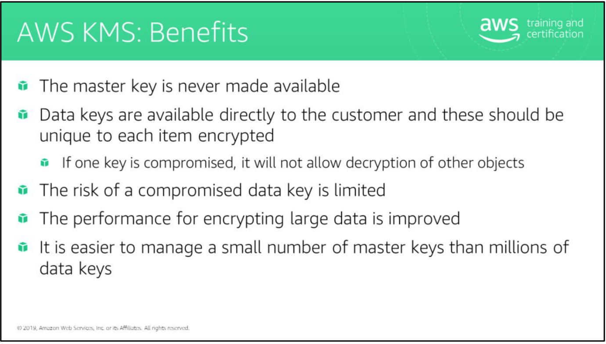
You can perform the following key management functions in AWS KMS:
- Create keys with a unique alias and description
- Define which IAM users and roles can manage keys
- Define which IAM users and roles can use keys to encrypt and decrypt data
- Choose to have AWS KMS automatically rotate keys on an annual basis
- Disable keys temporarily so they cannot be used by anyone
- Re-enable disabled keys
- Audit use of keys by inspecting logs in AWS CloudTrail
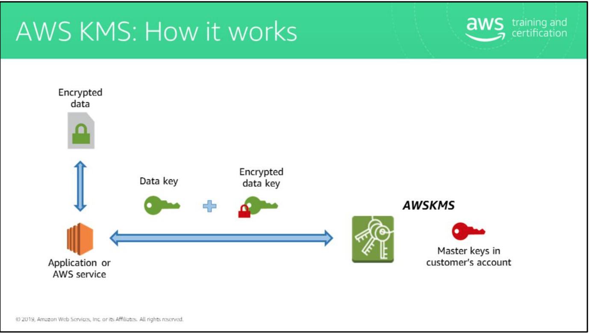
- An application or AWS service client requests an encryption key to encrypt data and passes a reference to a master key under the account.
- The client requests are authenticated based on whether they have access to use the master key.
- A new data encryption key is created and a copy of it is encrypted under the master key.
- Both the data key and encrypted data key are returned to the client. The data key is used to encrypt customer data and then deleted as soon as it is practical.
- The encrypted data key is stored for later use and sent back to AWS KMS when the source data needs to be decrypted.
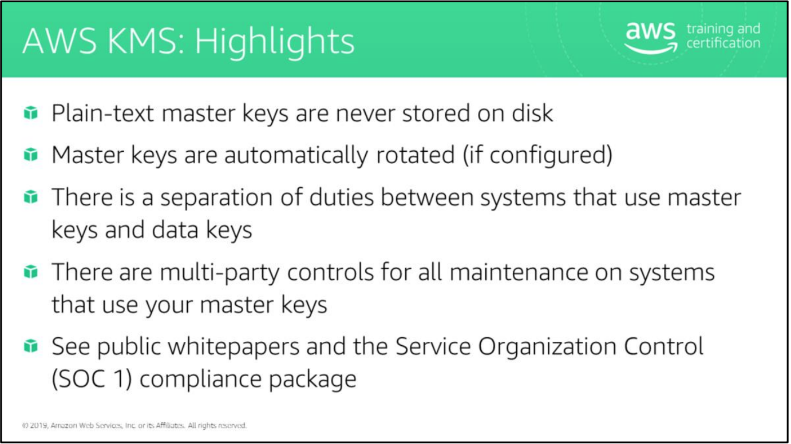
AWS KMS is designed so that no one has access to your master keys.
The service is built on systems designed to protect master keys with extensive hardening techniques such as never storing plaintext master keys on disk, not persisting them in memory, and limiting which systems can connect to the device.
All access to update software on the service is controlled by a multi-level approval process that is audited and reviewed by an independent group within Amazon.
For a list of services that integrate with AWS KMS, see https://aws.amazon.com/kms/details/.
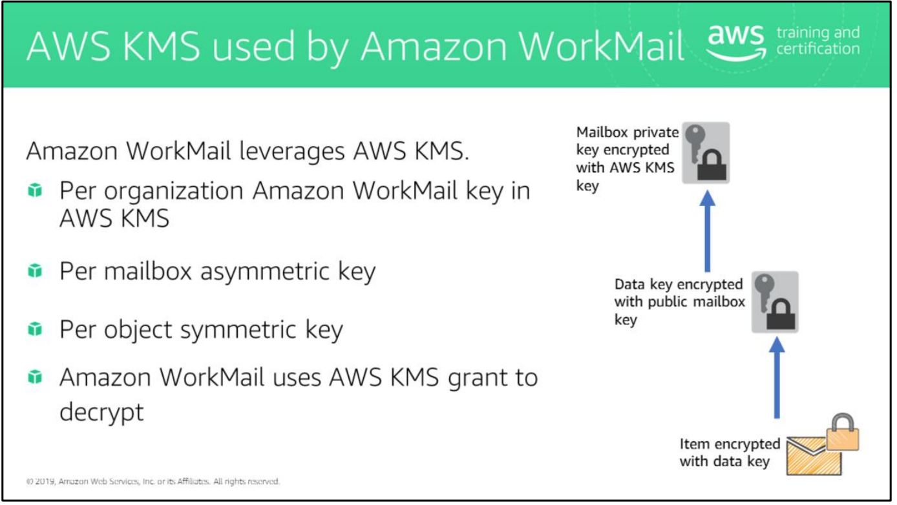
For more information about Amazon WorkMail, see https://aws.amazon.com/workmail/.
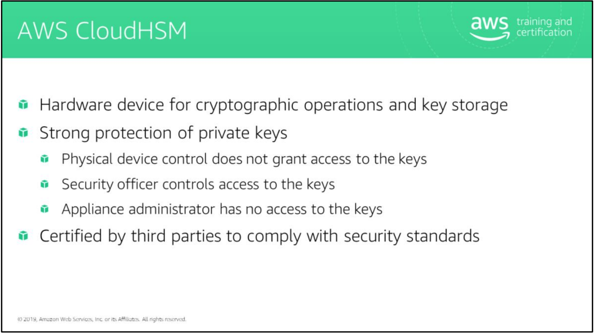
The hardware security module is a single-tenant hardware in AWS and is called AWS CloudHSM. This is a physical appliance dedicated to you.
An HSM is a purpose-built device designed to perform secure key storage & cryptographic operations as well as protect stored key material with physical and logical mechanisms.
Physical protections include tamper detection and response. If a tampering event is detected, the HSM is designed to securely destroy the keys rather than risk compromise.
Logical protections include role-based controls that provide a separation of duties between appliance administrators and security officers. For example, an appliance administrator’s role will allow network connectivity such as provisioning an IP address, configuring SNMP, and log management. A security officer’s role controls access to the keys, their use, and available cryptographic controls.
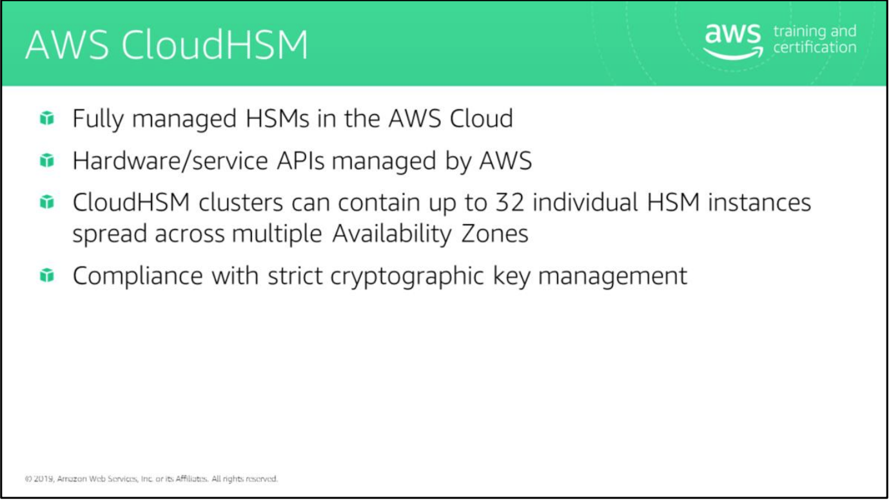
AWS CloudHSM
The AWS CloudHSM service supports corporate, contractual and regulatory compliance requirements for data security by using dedicated Hardware Security Modules (HSM) instances within the AWS cloud. AWS and AWS Marketplace partners offer a variety of solutions for protecting sensitive data within the AWS platform, but for some applications and data subject to contractual or regulatory mandates for managing cryptographic keys, additional protection may be necessary.
CloudHSM complements existing data protection solutions by protecting encryption keys within HSMs that are designed and validated to government standards for secure key management. CloudHSM securely generates, stores, and manages cryptographic keys used for data encryption so that keys are accessible only by you.
Managed by AWS
Amazon administrators monitor the health of your HSMs but do not have any access to configure, manage, or use them. Applications use standard cryptographic APIs in conjunction with HSM client software installed on the application instance to send cryptographic requests to the HSM.
The client software maintains a secure channel to all of the HSMs in your cluster and sends requests on this channel and the HSM performs operations and returns the results over the secure channel. The client then returns the result to the application through the cryptographic API.
CloudHSM Clusters
A single CloudHSM Cluster can contain up to 32 HSMs. Customers can create up to 28 instances, subject to account service limits. The remaining capacity is reserved for internal use. (For example when replacing failed HSM instances.)
Compliance and Cryptographic Key Management
Compliance requirements regarding CloudHSM are often met directly by the FIPS 140-2 Level 3 validation of the hardware itself rather than as part of a separate audit program.
FIPS 140-2 Level 3 is a requirement of certain use cases including document signing, payments, or operating as a public Certificate Authority for SSL certificates.
AWS Compliance
For information about which compliance programs cover CloudHSM refer to the AWS Compliance site: https://aws.amazon.com/compliance/
Requesting compliance reports that include CloudHSM in scope
You can request compliance reports through your Business Development representative. If you don’t have one, you can request one here: https://pages.awscloud.com/compliance-contact-us.html
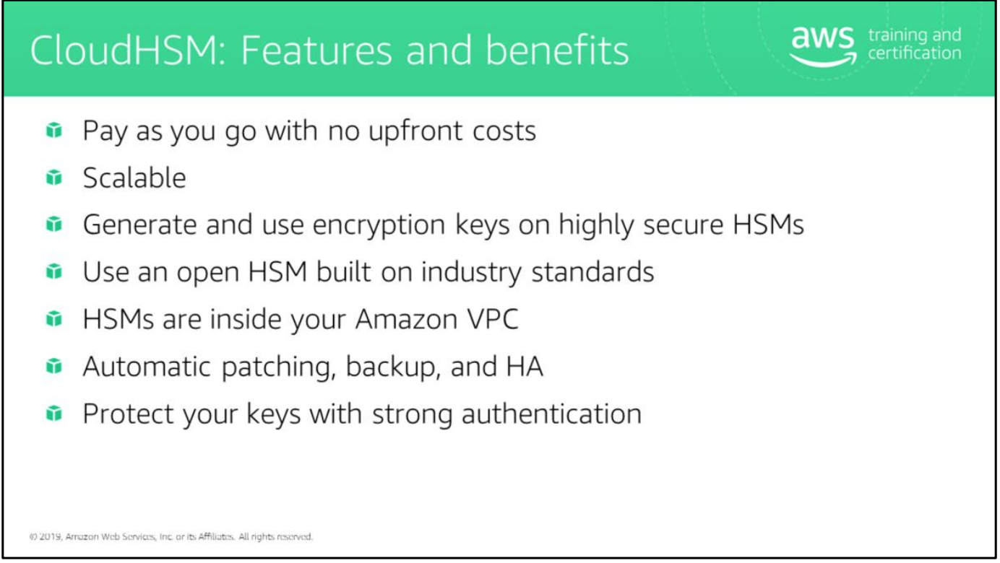
Following a list of the CloudHSM features and benefits:
- CloudHSM pricing is based on use; there are no upfront costs.
- Start and stop HSMs on demand. Spin cluster down to zero HSMs, restore from backup when needed.
- FIPS 140-2 Level 3 validated. MofN & 2FA supported.
- Provisioning, patching, backup, and HA included.
- Export, as permitted, keys to most commercially available HSMs, such as PKCS#11, Java Cryptography Extensions (JCE), and Microsoft CryptoNG (CNG).
- HSMs are isolated from the rest of the network. Each HSM appears as a network resource in your Virtual Private Cloud (VPC).
- New HSMs are automatically cloned; clients automatically reconfigured. High availability is provided automatically when you have at least two HSMs in your CloudHSM cluster.
- CloudHSM supports Quorum authentication for critical administrative and key management functions, and multi-factor authentication (MFA) using tokens you provide.
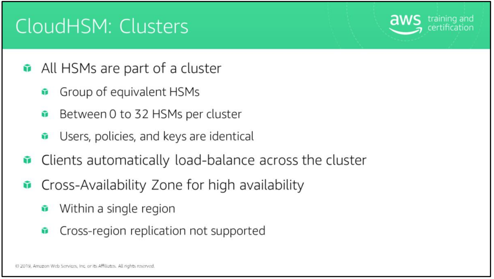
CloudHSM provides hardware security modules (HSMs) in a cluster. A cluster is a collection of individual HSMs that CloudHSM keeps in sync as a single logical HSM. When a task or operation is performed on one HSM in a cluster, the other HSMs in the cluster are automatically updated.
Cluster can be created in size from 0 to 32 HSMs. (The default limit is 6 HSMs per AWS account per AWS Region.)
Placing HSMs in different Availability Zones in a region creates high availability and adding more HSMs to a cluster improves performance.
When creating a CloudHSM cluster with more than one HSM, load balancing is automatically enabled. The client distributes cryptographic operations across all HSMs in the cluster based on each HSM's capacity.
Cross-region replication is not supported but AWS CloudHSM allows for backups of a CloudHSM Cluster to be copied from one region to another for disaster recovery purposes. For more details, see https://aws.amazon.com/about-aws/whats-new/2018/07/aws-cloudhsm-backups-can-now-be-copied-across-regions/.
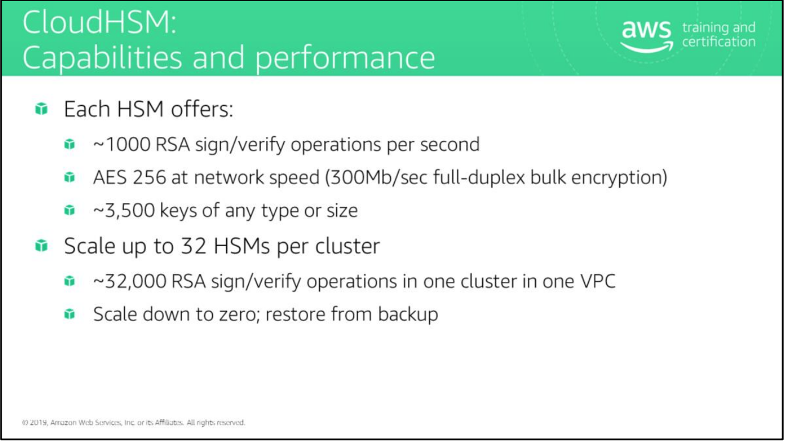
The performance of the individual HSMs varies based on the specific workload. The table below shows approximate single-HSM performance for several common cryptographic algorithms.
Performance can vary based on exact configuration and data sizes. AWS encourages load testing applications with CloudHSM to determine exact scaling needs.
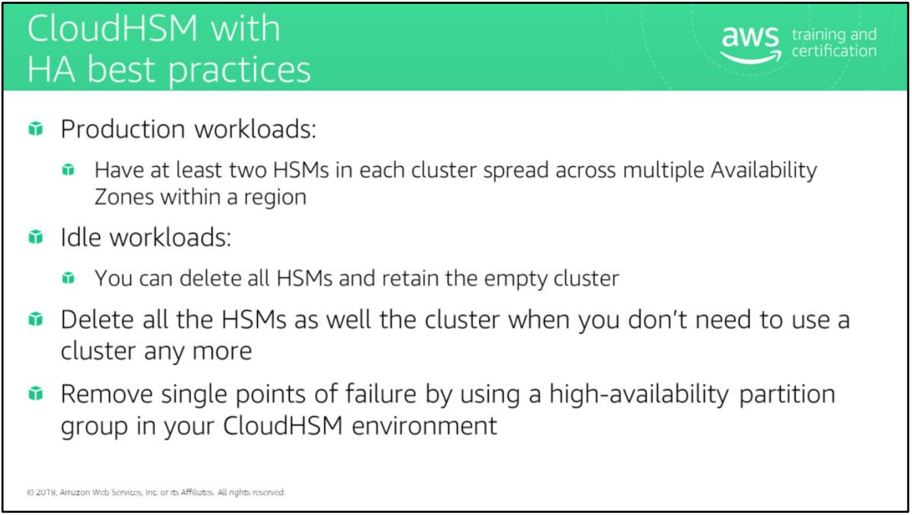
Start using CloudHSM by creating a cluster in an AWS region. A cluster can contain multiple individual HSMs. For production workloads, have at least two HSMs spread across multiple Availability Zones.
For idle workloads, delete all HSMs and retain the empty cluster. When a cluster is no longer needed, delete its HSMs as well as the cluster. Later, when HSMs are required again, create a new cluster from the backup. This effectively restores the previous HSM.
By accessing CloudHSM devices via a HA partition group, all traffic is load balanced between all backing CloudHSM devices. The HA partition group ensures each CloudHSM has identical information and can respond to any request issued.
With an HA partition group set up with automatic recovery, if a CloudHSM device fails, the device will attempt to recover itself and all traffic will be rerouted to the remaining CloudHSM devices in the HA partition group. This prevents traffic from being interrupted. After recovery, all data will be replicated across the CloudHSM devices in the HA partition group to ensure consistency.
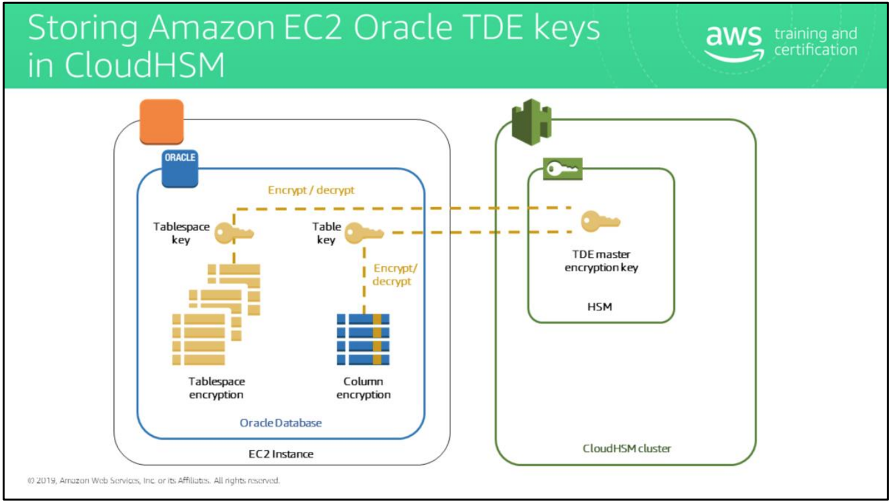
Some versions of Oracle's database software offer a feature called Transparent Data Encryption (TDE) where the database software encrypts data before storing it on disk. The data in the database's table columns or tablespaces is encrypted with a table key or tablespace key encrypted with the TDE master encryption key. It is possible to store the TDE master encryption key in the HSMs in your CloudHSM cluster to provide additional security.
In this solution, the Oracle Database is installed on an Amazon EC2 instance. Oracle Database integrates with the CloudHSM software library for PKCS #11 to store the TDE master key in the HSMs in your cluster.
Amazon RDS Oracle TDE is not supported on AWS CloudHSM. Oracle TDE is supported for Oracle databases (11g and 12c) on an Amazon EC2.
For information about integrating an Oracle instance in Amazon RDS with CloudHSM Classic, see https://docs.aws.amazon.com/cloudhsm/latest/userguide/oracle-tde.html For information about Oracle TDE and AWS Cloud HSM, see https://docs.aws.amazon.com/cloudhsm/latest/userguide/oracle-tde.html.
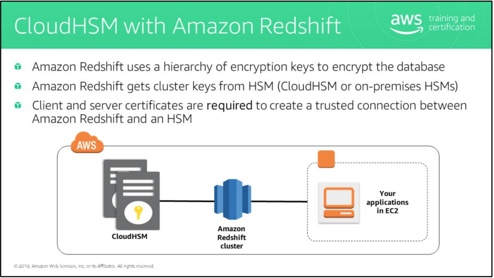
Amazon Redshift uses a hierarchy of encryption keys to encrypt the database. Use either AWS KMS or a hardware security module (HSM) to manage the top-level encryption keys in this hierarchy. The process that Amazon Redshift uses for encryption differs depending on how the keys are managed.
When Amazon Redshift is configured to use an HSM, Redshift sends a request to the HSM to generate and store a key to be used as the Cluster Encryption Key (CEK). However, the HSM doesn’t export the CEK to Amazon Redshift. Instead, Amazon Redshift randomly generates a Database Encryption Key (DEK) in the cluster and passes it to the HSM to be encrypted by the CEK. The HSM returns the encrypted DEK to Redshift, where it is further encrypted using a randomly-generated, internal master key and stored internally on disk in a separate network from the cluster.
Amazon Redshift also loads the decrypted version of the DEK in memory in the cluster so that the DEK can be used to encrypt and decrypt the individual keys for the data blocks.
Rebooting Amazon Redshift
If the cluster is rebooted, Amazon Redshift decrypts the internally-stored, double-encrypted DEK using the internal master key to return the internally stored DEK to the CEK-encrypted state. The CEK-encrypted DEK is then passed to the HSM to be decrypted and passed back to Amazon Redshift, where it can be loaded in memory again for use with the individual data block keys.
When using an HSM, client and server certificates are required to create a trusted connection between Amazon Redshift and and HSM.
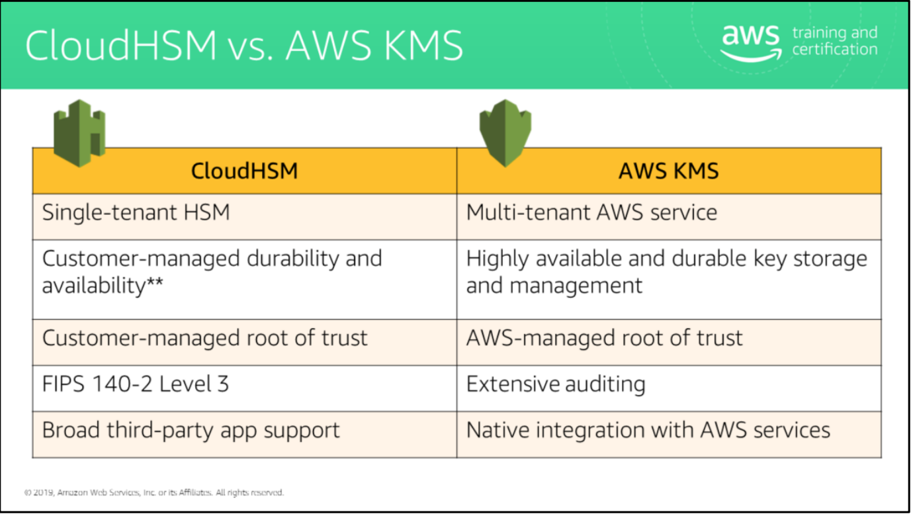
CloudHSM provides a dedicated hardware device installed in a virtual private cloud that provides a FIPS 140-2 Level 3 validated single-tenant HSM to store and use keys.
You have total control over your keys and the application software that uses them with CloudHSM. AWS KMS allows you to control the encryption keys used by your applications and supported AWS services in multiple regions around the world from a single console.
Centralized management of all your keys in AWS KMS lets you enforce who can use your keys, when they get rotated, and who can manage them.
AWS KMS integration with AWS CloudTrail gives you the ability to audit the use of your keys to support your regulatory and compliance activities.
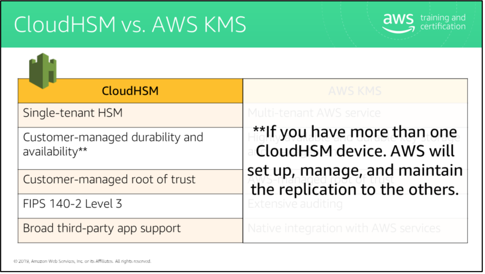
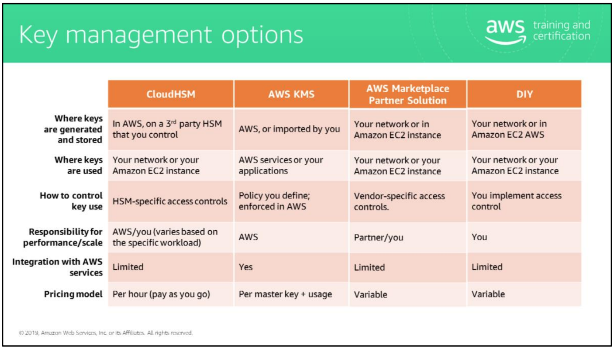
Here is a broader comparison of key management options, including non-AWS options.
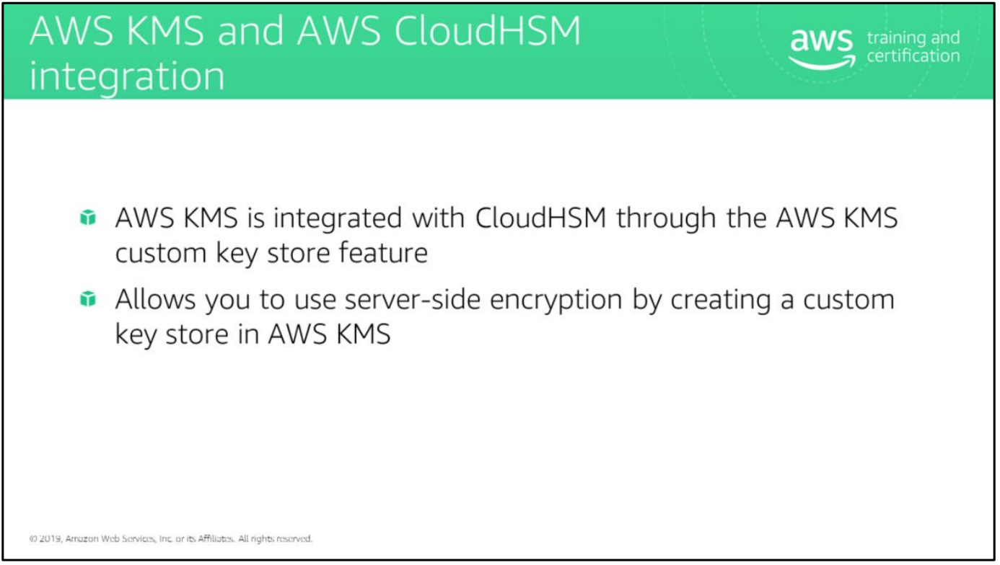
AWS KMS has integrated with AWS CloudHSM to create your own KMS custom key store.
Each custom key store is backed by a CloudHSM cluster and enables you to generate, store, and use your KMS keys in hardware security modules (HSMs) that you control.
The KMS custom key store helps satisfy compliance obligations that would otherwise require the use of on-premises HSMs and supports AWS services and encryption toolkits that are integrated with KMS.
Generate AWS KMS customer master keys (CMKs) and store them in a custom key store rather than the default KMS key store.
Each KMS custom key store is created using HSM instances in a CloudHSM cluster that you own. These HSMs can be managed independently of KMS. When using a KMS CMK in a custom key store, the cryptographic operations under that key are performed exclusively in your CloudHSM cluster.
Master keys stored in a custom key store are managed in the same way as any other master key in KMS and can be used by any AWS service that encrypts data and that supports KMS customer managed CMKs.
The use of a custom key store does not affect KMS charges for storing and using a CMK. However, a custom key store does involve the additional cost of maintaining a CloudHSM cluster with at least two HSMs.
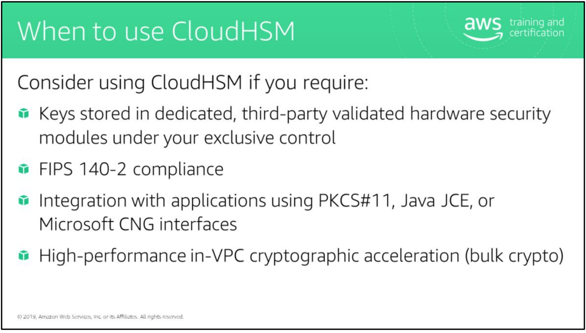
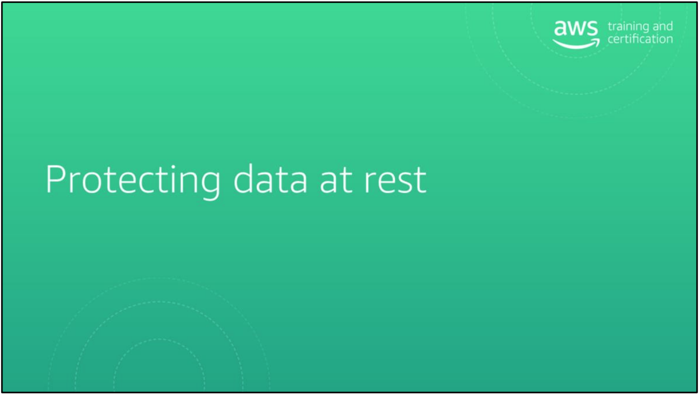
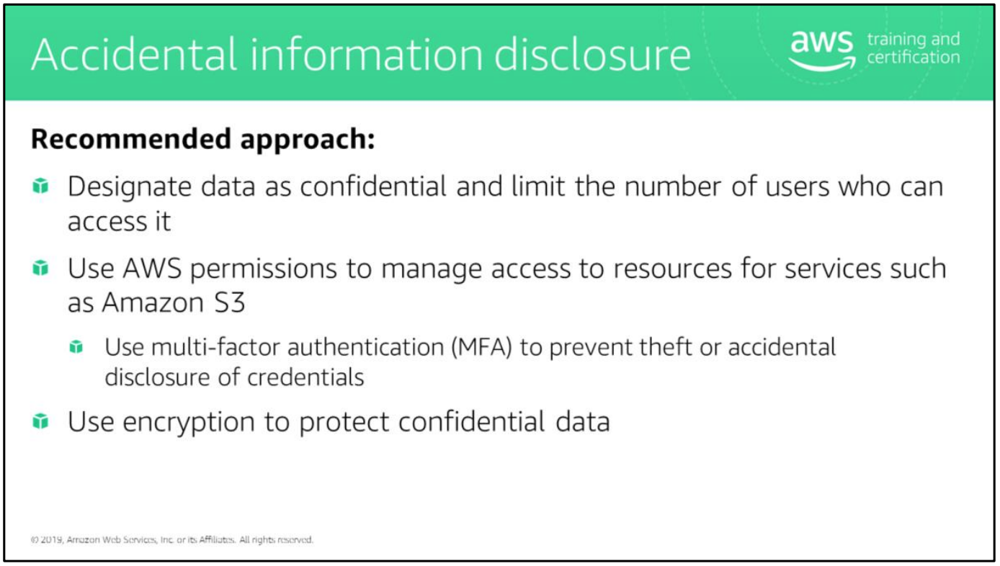
Designate data as confidential and limit the number of users who can access it.
Use AWS permissions to manage access to resources for services such as Amazon S3.
Use encryption to protect confidential data.
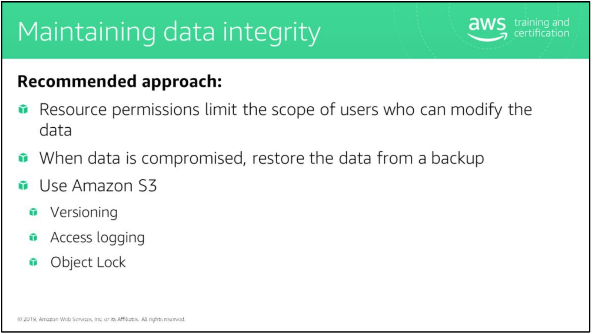
To ensure that data integrity is not compromised through deliberate or accidental modification, use resource permissions to limit the scope of users who can modify the data.
Even with resource permissions, accidental deletion by a privileged user is still a threat. If you detect data compromise, restore the data from a backup, or, in the case of Amazon S3, from a previous object version.
MAC = message authentication code
HMAC = keyed-hash message authentication code
DS = data source
AEAD = Authenticated Encryption with Additional Data
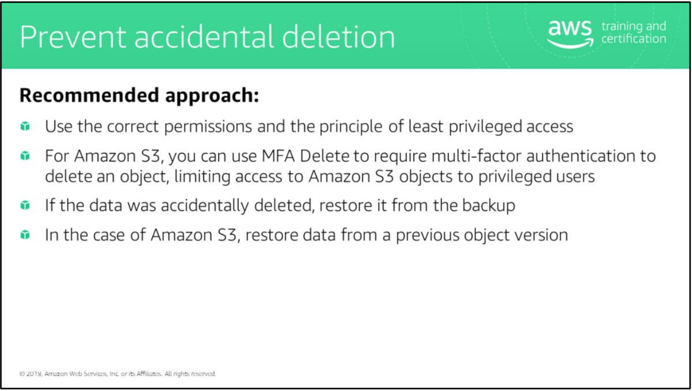
Using the correct permissions and the principle of least privileged access is the best protection against accidental or malicious deletion.
For services such as Amazon S3, use MFA Delete to require multi-factor authentication to delete an object.
If you detect a data compromise, restore the data from backup, or, in the case of Amazon S3 with versioning enabled, from a previous object version.
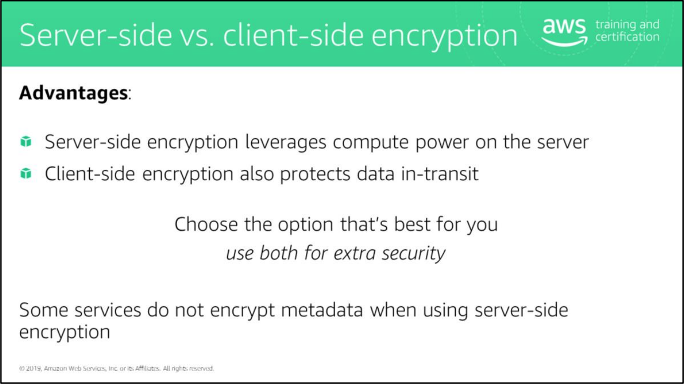
Depending on security requirements, use server-side encryption and client-side encryption to encrypt data.
Each approach has its own advantages. For an enhanced security profile, both techniques can be used.
AWS server-side encryption will encrypt data on your behalf “after” the API call is received by the service, leveraging AWS KMS.
AWS automatically manages and rotes the keys.
Note: Metadata is not encrypted when using server-side encryption such as Amazon S3.
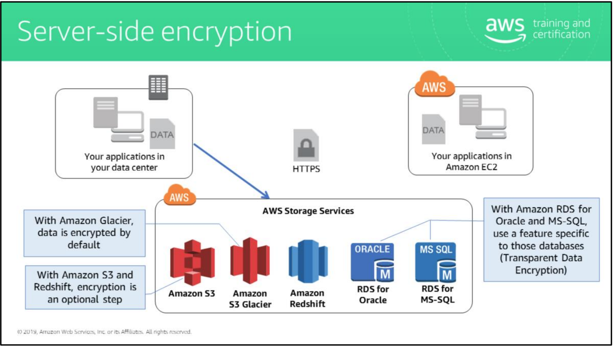
Source data comes from either systems in a data center or an Amazon EC2 instance.
Data can be uploaded via a secure HTTPS connection to any of five AWS services that support automatic server-side encryption.
The service endpoint handle the encryption and key management processes.
With Amazon S3 and Redshift, encryption is an optional step determined at the time it is uploaded. Using Amazon Glacier, all data is encrypted by default.
Amazon RDS for Oracle and Microsoft SQL use a feature specific to those database packages called Transparent Data Encryption, or TDE. TDE uses keys created in the database application along with keys created by AWS to protect your data.
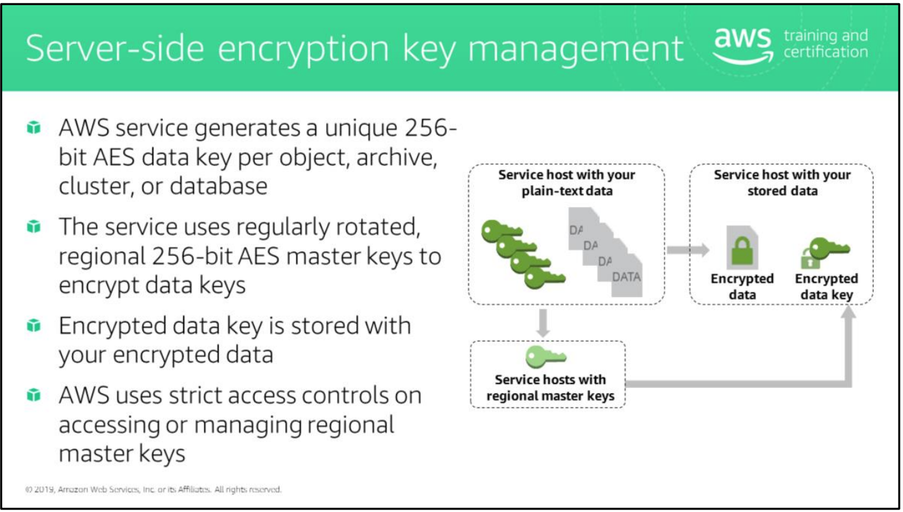
Because AWS manages all the keys and encryption processes for you, it’s important to understand how AWS does that in a secure way.
- The AWS service that is responsible for storing your data on disk creates a unique 256-bit AES data key per Amazon S3 object, Amazon Glacier archive, Amazon Redshift cluster, or Amazon RDS database.
- This data key is used to encrypt the relevant data.
- The data key is then encrypted with a master key that is unique to the service and the region. This master key is stored in a separate system with stringent access control mechanisms.
- The original data key is deleted and only the encrypted version persists on disks controlled by the service that stores your data.
Amazon Redshift and Amazon RDS
With Amazon Redshift and Amazon RDS, there are some extra levels of envelope encryption happening between the data key and the regional master key. The data key is persisted in memory on the instance to be used for active read/writes.
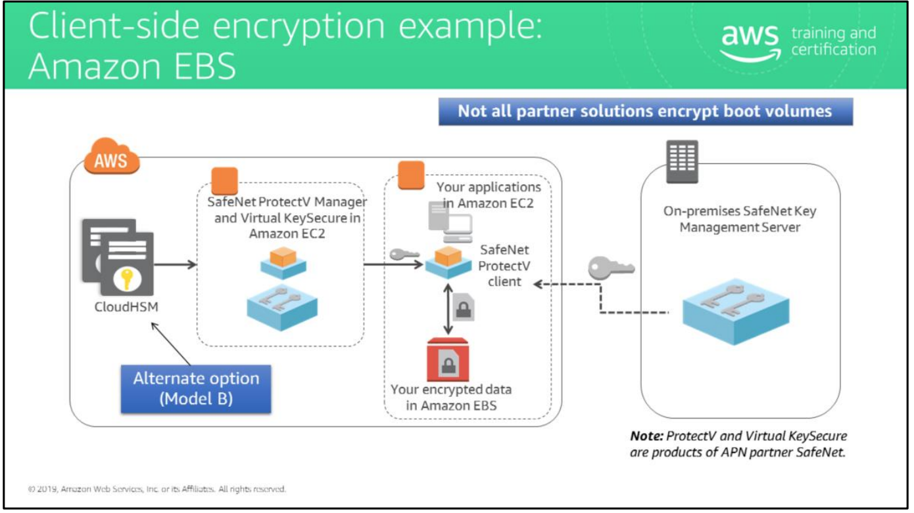
Because Amazon EBS volumes are presented to instances as a block devices, most standard encryption tools can be leveraged for file system–level or block-level encryption.
Common block-level open source encryption solutions for Linux are Loop-AES, dm-crypt (with or without) LUKS, and TrueCrypt.
Each of these operates below the file system layer using OS specific device drivers to perform encryption and decryption. This is useful when all data written to a volume is to be encrypted.
Another option is to use file system–level encryption, which works by stacking an encrypted file system on top of an existing file system. This method is typically used to encrypt a specific directory. eCryptfs and EncFs are two Linux-based open source examples of file system–level encryption tools.
These solutions require you to provide keys either manually or from your KMI.
EBS volumes
An important caveat with both block-level and file system–level encryption tools is that they can only be used to encrypt data volumes that are not Amazon EBS boot volumes. This is because these tools don’t allow you to automatically make a trusted key available to the boot volume at startup.
Encrypting Amazon EBS volumes attached to Windows instances can be done using BitLocker or Encrypted File System (EFS) or other software applications. In either case, you still need to provide keys to these encryption methods and you can only encrypt data volumes.
AWS partner solutions can help automate the process of encrypting Amazon EBS volumes and supplying and protecting the necessary keys. Trend Micro SecureCloud and SafeNet ProtectV are two such partner products that encrypt Amazon EBS volumes and include a KMI.
Both products can encrypt boot volumes in addition to data volumes. These solutions also support use cases where Amazon EBS volumes attach to autoscaled Amazon EC2 instances.
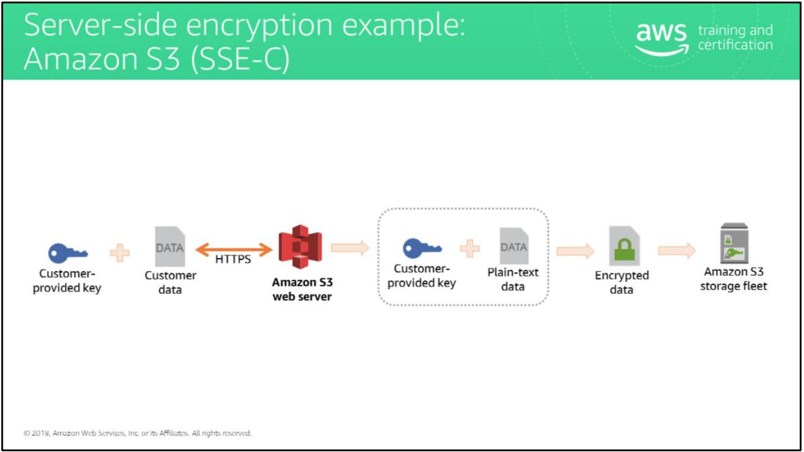
Amazon S3 supports server-side encryption (SSE) of user data that is transparent to the end user.
S3 provides three different options for managing encryption keys when using server-side encryption.
- SSE with Amazon S3–managed keys (SSE-S3)
- SSE with AWS KMS–managed keys (SSE-KMS)
- SSE with customer-provided keys (SSE-C)
The slide illustrates the SSE-C process where you set your own encryption keys.
With the encryption key you provide as part of the request, Amazon S3 manages both the encryption as it writes to disks, and decryption, when you access objects. You don't maintain the code to perform data encryption and decryption, just the keys.
Amazon S3 does not store the encryption key you provide. Instead, a randomly salted hash-based message authentication code (HMAC ) value of the encryption key is stored to validate future requests. The salted HMAC value cannot be used to derive the value of the encryption key or to decrypt the contents of the encrypted object. That means if you lose the encryption key, you lose the object.
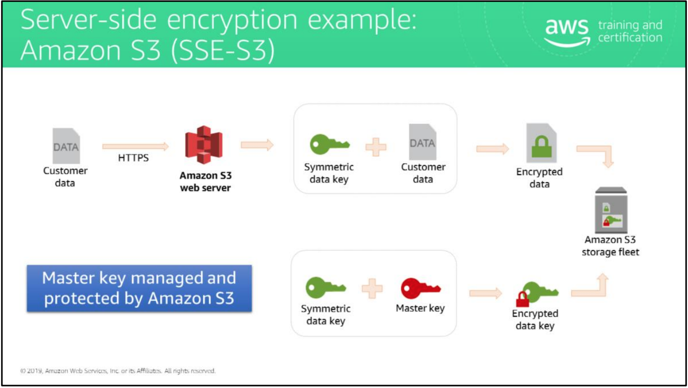
The slide illustrates the SSE-S3 process where Amazon S3 manages the encryption keys. In this option, AWS generates a unique encryption key for each object and then encrypts the object using AES-256.
The encryption key is then encrypted itself using AES-256 with a master key that is stored in a secure location.
The master key is rotated on a regular basis.
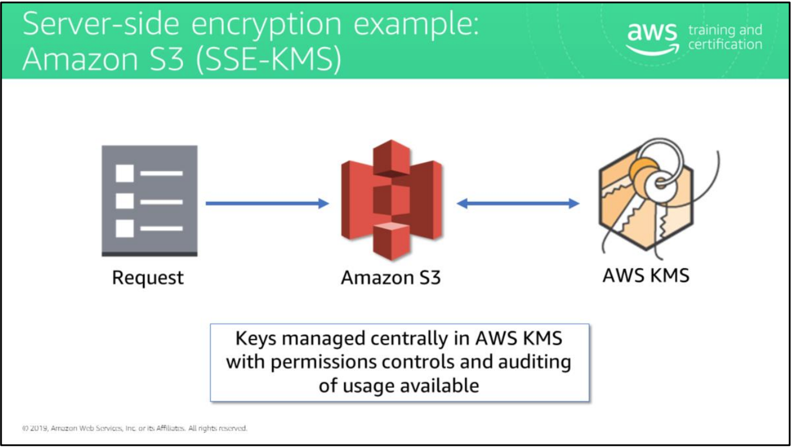
AWS KMS can be managed via the Encryption Keys section in the IAM console or via AWS KMS APIs. Use KMS to centrally create encryption keys, define the policies that control how keys can be used, and audit key usage to prove they are being used correctly.
The first time an SSE-KMS-encrypted object is added to a bucket in a region, a default CMK is automatically created. This key is used for SSE-KMS encryption unless selecting a CMK that created separately using AWS KMS.
Creating your own CMK gives you flexibility, including the ability to create, rotate, disabled, and define access controls and to audit the encryption keys used to protect data.
Uploading or accessing objects encrypted by SSE-KMS requires the use of AWS Signature Version 4 for added security.
For more information, see <https://docs.aws.amazon.com/AmazonS3/latest/dev/UsingAWSSDK.html#s pecify-signature-version>.
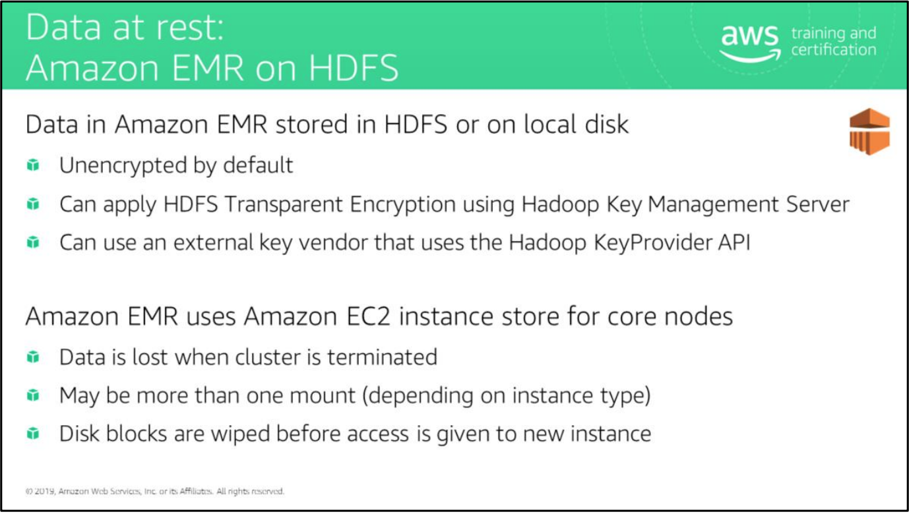
When a Hadoop cluster is created, each node is created from an Amazon EC2 instance which comes with a preconfigured block of attached disk storage called an Amazon EC2 local instance store.
Transparent encryption is implemented through the use of HDFS encryption zones, which are HDFS paths that you define. Each encryption zone has its own key, which is stored in the key server specified by the hdfs-site configuration.
Amazon EMR uses the Hadoop KMS by default. However, you can use another KMS that implements the KeyProvider API operation. Each file in an HDFS encryption zone has its own unique data encryption key, which is encrypted by the encryption zone key. HDFS data is encrypted end-to-end (at-rest and in-transit) when data is written to an encryption zone because encryption and decryption activities only occur in the client.
The storage used for the HDFS mount point is the ephemeral storage of the cluster nodes. Depending upon the instance type there may be more than one mount.
Encrypting mount points
Encrypting mount points requires the use of an Amazon EMR bootstrap script that will:
- Stop the Hadoop service
- Install a file system encryption tool on the instance
- Create an encrypted directory to mount the encrypted file system on top of the existing mount points
- Restart the Hadoop service
Note: Another option is to perform these steps using the open source eCryptfs package and have an ephemeral key generated in code on each of the HDFS mounts.
You do not need to worry about persistent storage of this encryption key, because the data it encrypts does not persist beyond the life of the HDFS instance.
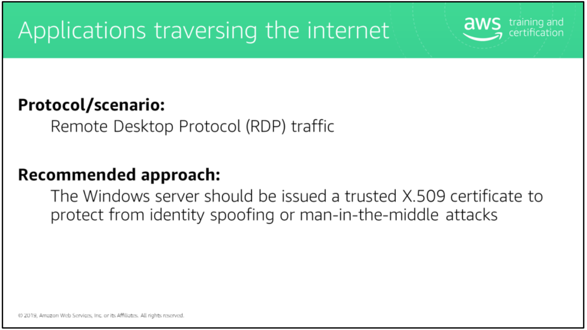
Remote Desktop Protocol (RDP): Users who access Windows Terminal Services in the public cloud usually use the Microsoft Remote Desktop Protocol.
By default, RDP connections establish an underlying SSL/TLS connection.
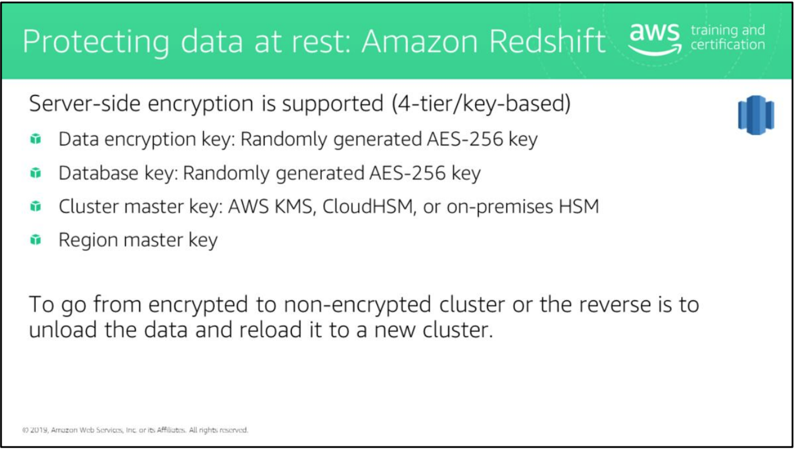
In Amazon Redshift, database encryption can be enabled for clusters to protect data at rest. When enabling encryption for a cluster, the data blocks and system metadata are encrypted for the cluster and its snapshots.
Encryption is an optional, immutable setting of a cluster. If encryption is desired, it must be enabled during the launch process. To change to an unencrypted cluster, the data must be unloaded from the encrypted one and loaded into the unencrypted one.
Though encryption is an optional setting in Amazon Redshift, AWS recommends enabling it for clusters that contain sensitive data.
Amazon Redshift automatically integrates with AWS KMS but not with an HSM. When you use an HSM, you must use client and server certificates to configure a trusted connection between Amazon Redshift and the HSM.
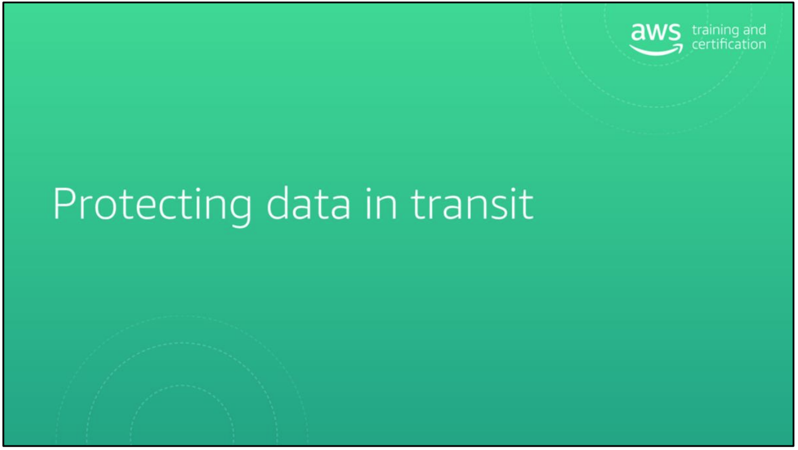
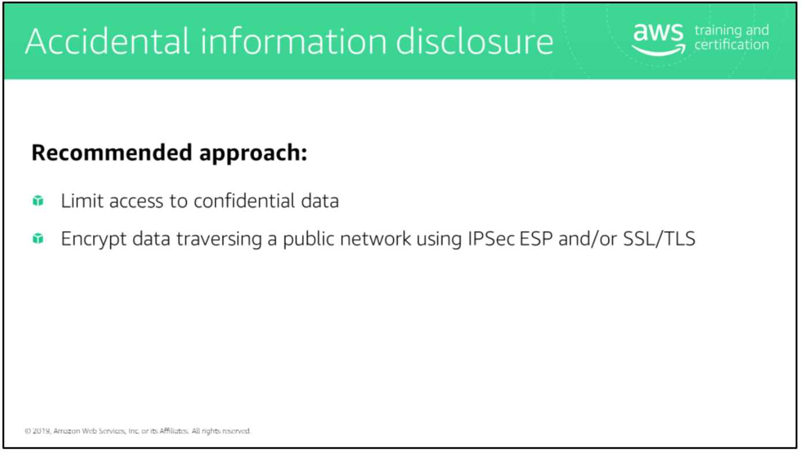
Designate data as confidential and limit the number of users who can access it.
Use AWS permissions to manage access to resources for services such as Amazon S3. Use encryption to protect confidential data.
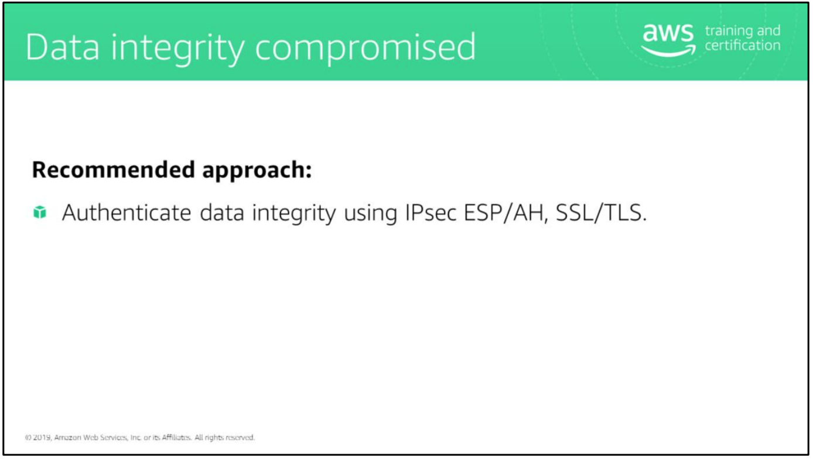
Whether or not data is confidential, you want to know that data integrity is not compromised through deliberate or accidental modification.
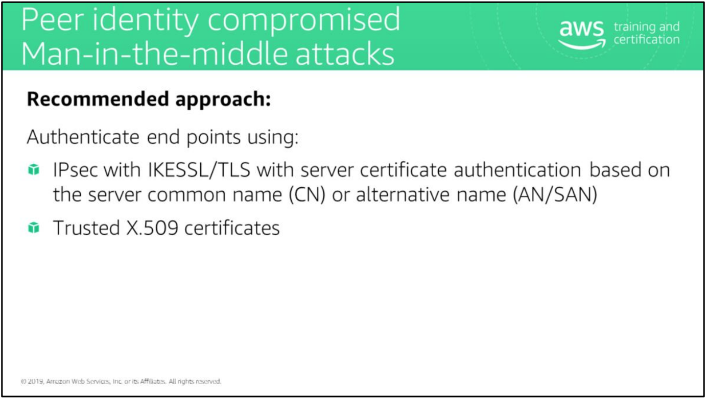
Encryption and data integrity authentication are important for protecting the communications channel. It is equally important to authenticate the identity of the remote end of the connection.
An encrypted channel is worthless if the remote end happens to be an attacker or an imposter relaying the connection to the intended recipient.
This is called a man-in-the-middle attack or identity spoofing.
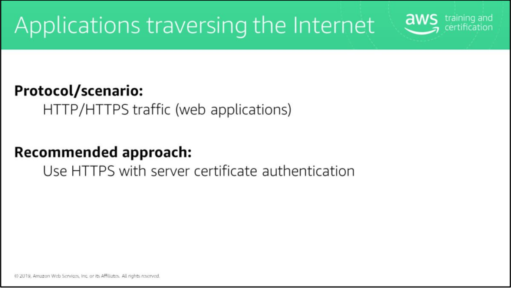
HTTP/HTTPS traffic: By default, HTTP traffic is unprotected.
SSL/TLS protection for HTTP traffic (HTTPS) is industry-standard and widely supported by web servers and browsers.
HTTP traffic can include not just client access to web pages but also web services (REST/SOAP-based access).
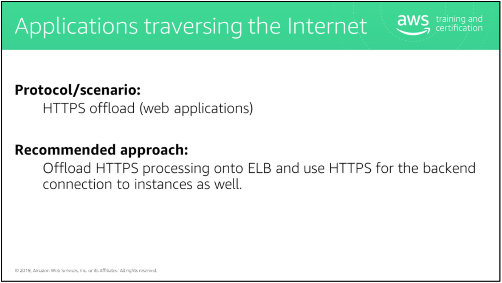
HTTPS offload: While using HTTPS is often recommended, especially for sensitive data, SSL/TLS processing requires additional CPU and memory resources from both the web server and the client.
This can put a considerable load on web servers that are handling thousands of SSL/TLS sessions.
There is less impact on the client, where only a limited number of SSL/TLS connections are terminated.
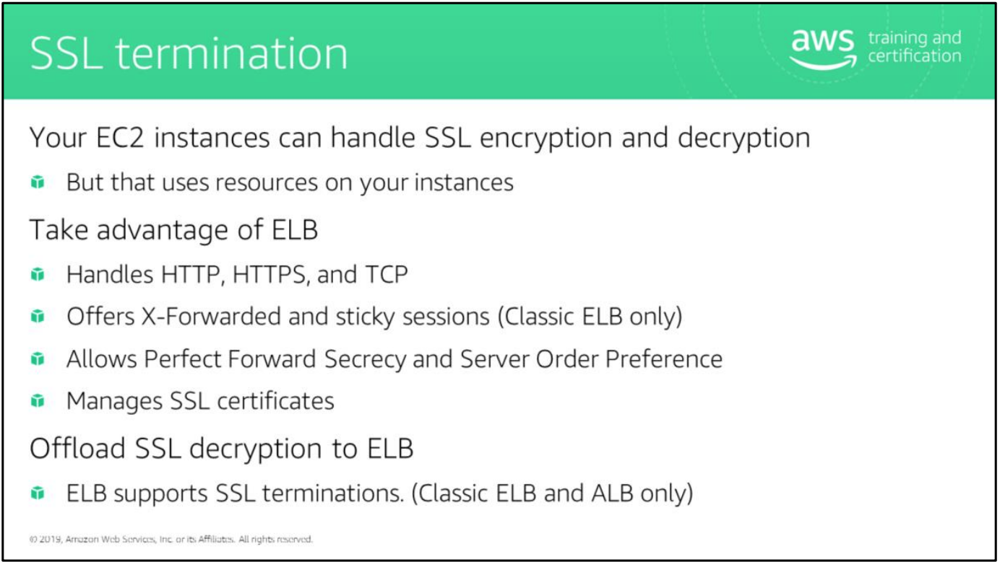
As a security best practice, it is recommended to use HTTPS protocol to protect data in transit. The SSL encryption and decryption operations can be handled by your EC2 instances but cryptographic operations consume resources. A better way to handle SSL termination is to use Elastic Load Balancing. Elastic Load Balancing (ELB) supports SSL termination and can centrally manage SSL certificates and manage encryption to back-end instances with optional public key authentication.
ELB can load balance HTTP/HTTPS applications and use layer 7–specific features, such as X-Forwarded and sticky sessions. It can also use strict layer-4 load balancing for applications that rely entirely on the TCP protocol.
Additional options can be implemented when using ELB. Use Perfect Forward Secrecy (PFS), to prevent the decoding of captured data even if the secret long-term key itself is compromised.
When the Server Order Preference option is selected, the load balancer will select a cipher suite based on the server’s prioritization of cipher suites rather than the client’s.
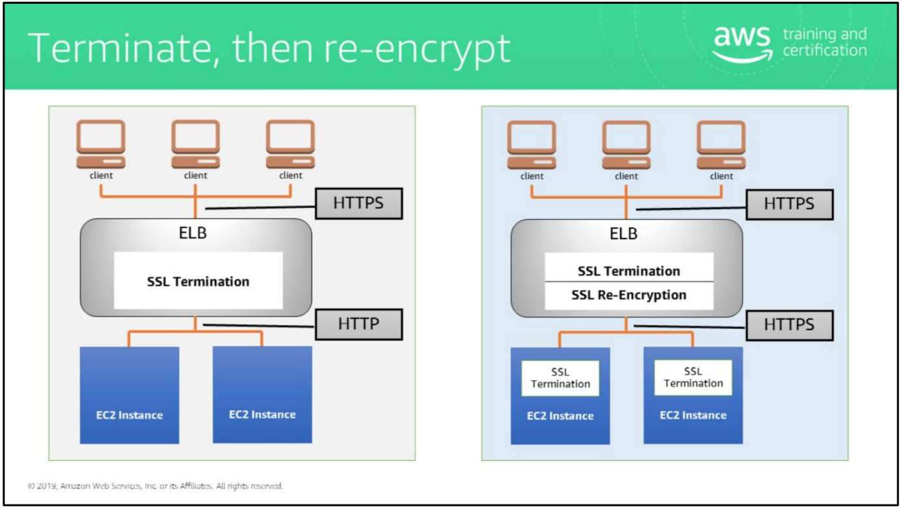
While SSL sessions can be terminated at the load balancer, certain compliance standards may require the sessions to be encrypted all-the-way to the application or database server.
In such scenarios, you may still terminate SSL sessions at the load balancer and then re-encrypt them before they are sent to the back-end EC2 instances.
This way you can leverage advantages of ELB such as session affinity, perfect forward secrecy, and server order preference, while still using HTTPS.
In this process, for additional protection, you can also use ELB to verify the authenticity of the EC2 server before sending the request.
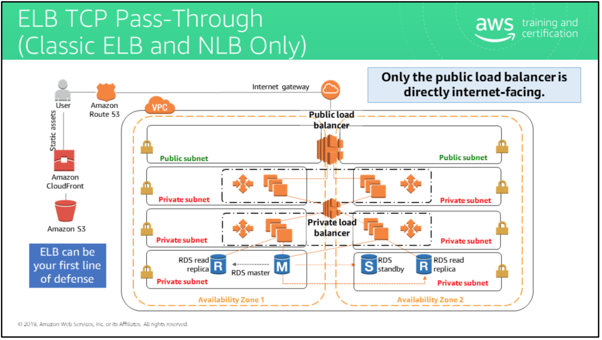
Another capability of ELB is TCP Pass-through (Classic ELB and NLB only) which allows you to perform SSL termination at your EC2 instances while leveraging other advantages of ELB.
Use a load balancer in front of your architecture to act as your first line of defense because it is a highly available load balancing solution.
Remote Desktop Protocol (RDP): Users who access Windows Terminal Services in the public cloud usually use the Microsoft Remote Desktop Protocol.
By default, RDP connections establish an underlying SSL/TLS connection.
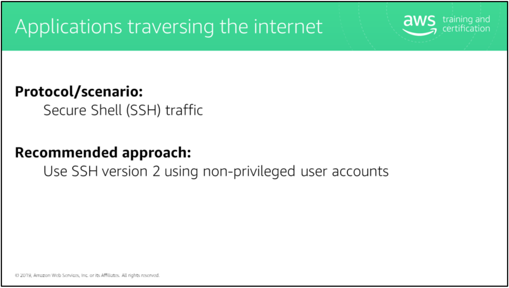
Secure Shell (SSH): SSH is the preferred approach for establishing administrative connections to Linux servers.
SSH is a protocol that, like SSL, provides a secure communications channel between the client and the server.
SSH supports tunneling for running applications (such as X-Windows) on top of SSH to protect the application session in transit.
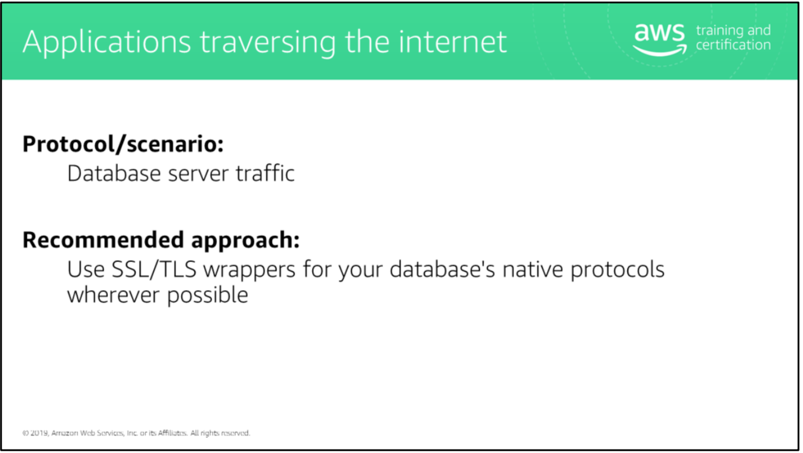
Database server traffic: If clients or servers need to access databases in the cloud, they might need to traverse the internet as well.
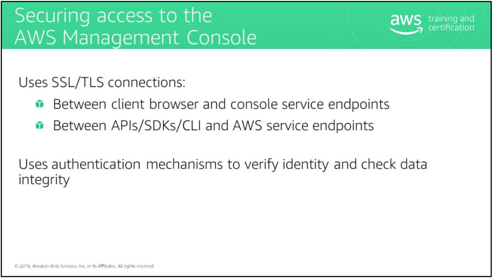
The AWS Management Console uses SSL/TLS between the client browser and console service endpoints to protect AWS service management traffic. Traffic is encrypted, data integrity is authenticated, and the client browser authenticates the identity of the console service endpoint by using an X.509 certificate.
After an SSL/TLS session is established between the client browser and the console service endpoint, subsequent HTTP traffic is protected within the SSL/TLS session.
Alternatively, use AWS APIs to manage services from AWS either directly from applications or third-party tools, or via SDKs, or via AWS command line tools.
AWS APIs are web services (SOAP or REST) over HTTPS. SSL/TLS sessions are established between the client and the specific AWS service endpoint, depending on the APIs used, and all subsequent traffic, including the SOAP/REST envelope and user payload, is protected within the SSL/TLS session.

The slide lists a few commonly practiced techniques to protect data in transit.
For more information about AWS Certificate Manager, see https://aws.amazon.com/certificate-manager/.